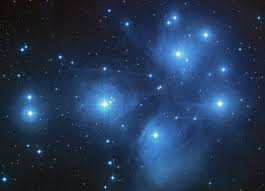

Originally, the word "nebula" referred to almost any extended astronomical object (other than planets and comets).
The etymological root of "nebula" means "cloud". As is usual in astronomy, the old terminology survives in modern usage in sometimes confusing ways. We sometimes use the word "nebula" to refer to galaxies, various types of star clusters and various kinds of interstellar dust/gas clouds.
More strictly speaking, the word "nebula" should be reserved for gas and dust clouds and not for groups of stars.
Galaxies
Early in this century, there was a great debate as to the nature of the nebulae like this
one which at that time could not be resolved into individual stars.
Thanks in large part to the work of Edwin Hubble whose famous paper "The Realm of the Nebulae" finally put the issue to rest,
we now know that these are really vast conglomerates billions of stars which are very much more distant from the Earth than other nebulae.
Our own Milky Way galaxy is just one of the billions of galaxies now known to exist.
A typical galaxy is 100,000 light-years in diameter.
(M 51 shown; see the SEDS Messier catalog for more examples.)
Globular Clusters
Globular clusters are gravitationally bound groups of many thousands
(sometimes as many as a million) of stars. They consist primarily of very old stars.
Globular clusters are not concentrated in the plane of the galaxy but rather are randomly distributed throughout the halo.
There are several hundred globular clusters associated with our galaxy. A typical globular cluster is a few hundred light-years across.
(M 13 shown; see the SEDS Messier catalog for more examples.)

Open Clusters
Open clusters are loose aggregations of dozens or hundreds of young stars.
They are generally not gravitationally bound and will disperse in a relatively short period of time, astronomically speaking.
They are often associated with more diffuse nebulosity, as well. Also called "galactic clusters" because they are usually found in the plane of the galaxy.
A typical open cluster is less than 50 light-years across. (M 44 shown; see the SEDS Messier catalog for more examples.)
Emission Nebulae
Emission nebulae are clouds of high temperature gas. The atoms in the cloud are energized by ultraviolet
light from a nearby star and emit radiation as they fall back into lower energy states (in much the same way as a neon light).
These nebulae are usually red because the predominant emission line of hydrogen happens to be red (other colors are produced by other atoms,
but hydrogen is by far the most abundant).
Emission nebulae are usually the sites of recent and ongoing star formation. (M 42 shown)
Reflection Nebulae
Dark nebulae are clouds of dust which are simply blocking the light from whatever is behind.
They are physically very similar to reflection nebulae; they look different only because of the geometry of the light source,
the cloud and the Earth. Dark nebulae are also often seen in conjunction with reflection and emission nebulae. >
typical diffuse nebula is a few hundred light-years across. (NGC 2264 shown; see also the Horsehead Nebula)
Planetary Nebulae
Planetary nebulae are shells of gas thrown out by some stars near the end of their lives. Our Sun will probably produce a
planetary nebula in about 5 billion years. They have nothing at all to do with planets; the terminology was invented because
they often look a little like planets in small telescopes.
A typical planetary nebula is less than one light-year across.
Supernova Remnants
Supernovae occur when a massive star ends its life in an amazing blaze of glory. For a few days a supernova emits as much energy as a whole galaxy.
When it's all over, a large fraction of the star is blown into space as a supernova remnant. A typical supernova remnant is at most few
light-years across.
.jpg)